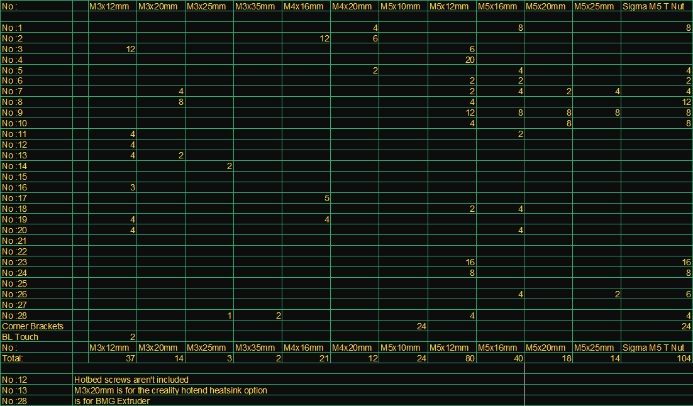

All-Aluminum and Rigid; DIY 3D Printer
3d printers in general don't need to be as rigid as the machines that are made for subtractive manufacturing; but they still need to be durable and adjustable enough to give out acceptable results.
ALUMI 3d printer was designed to be long lasting and the spare parts for it are easy to source out for anybody. You will see the design is allowing for flexibility of choices. (ex: You may choose between nema 17 and 23 steppers. There are also options for standard round E3D heatsinks and creality style cuboid heatsinks.)
Note: Please keep in mind that the current hotend carriage design is focused on ABS printing.
Here is the overview video of the design files:
To be able to make one for yourself; you will need:
- A plasma cutting service,
- Aluminum sheets and plates that are varying in thickness,
- Sigma profile extrusion,
- M3, M4, M5 Screws in a variety of lengths,
- Usual 3d printer electronics of your choice,
- An extruder solution of your choice and such...
Be Aware! It is still a DIY project which is suitable for the people who have the time and the knowledge:
- You will be drilling and tapping holes in order to finish the mechanical parts before the assembly,
- Adjusting the angles of the XYZ Axes,
- Assembling the electronics properly,
- Compiling and flashing the software,
- Finally calibrating the printer before the first use.
After all, you're building a machine from scratch. No matter how it looks like a puzzle for enthusiasts, it's important to do things right to achieve the full potential of the printer later. It's nothing to be afraid of, but we believe it's best to know what to expect ahead of time. So, prepare yourself fully before starting the project. Also don't hesitate to ask for help around or online to make sure you're doing it the right way.
You will find the dimensions of sigma profile, chrome bars and trapezoidal screws for the chassis structure on the table below:
You will find the DXF design files for the parts that needs to be cut from aluminum sheets at the following link:
Sheet metal parts have their part numbers, their thicknesses and the needed quantity in their file names. Also find the same info on the following table for future reference:
Note: The design files may be within 0.3mm error margin due to conversion to DXF format.
You will find the screw counts that will go on each part on the table below:
Review the table carefully and make sure you have more than enough as some of them would be defective or lost in the process.
You will find the rest of the necessary mechanical parts on the table below:
You will also find some of the necessary tools on the list below:
Don't feel obligated to own the biggest workshop. Consider borrowing some of the tools if you don't have them. Use creative juices to solve the problems with valid substitutions or ask other people for their help with some of the tasks.
Last but not least; Pay as you feel or consider donating to this concept to grow further. Also mention this project to the groups of people who might be interested in it.
Good Luck!